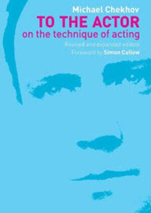
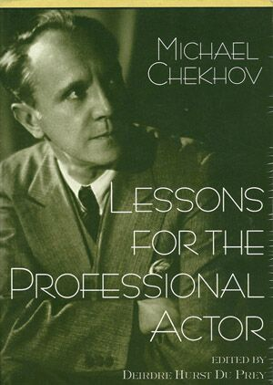
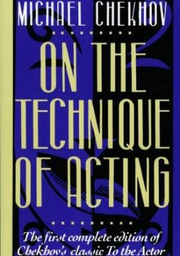
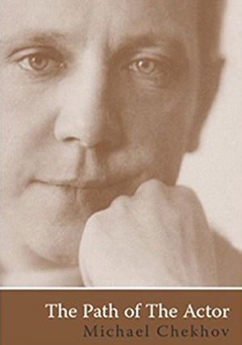

PHILOSOPHY
MICHAEL CHEKHOV’S TECHNIQUE
Michael Chekhov developed an acting technique, a ‘psycho-physical approach’, in which transformation, working with impulse, imagination and inner and outer gesture are central. It offers clear and practical tools in working with imagination, feelings and atmosphere.
Chekhov's technique is a completely imaginative approach to experiencing the truth of the moment. According to Chekhov, the work of the actor is to create an inner event which is an actual experience occurring in real time within the actor. This inner event as it is being experienced by the actor is witnessed by the audience as an outward expression related to the contextual moment of the play. This event and the ability to create it belong to what Michael Chekhov calls the Creative Individuality of the actor, and is not directly tied to his personality. This Creative Individuality allows the artist actor to use parts of themselves that are not just the smaller meaner more banal elements that make up their daily life, but rather parts of their unconscious, where dwell more universal and archetypal images.
"All you experience in the course of your life, all you observe and think, all that makes you happy or unhappy, all your regrets or satisfactions, all your love or hate, all you long for or avoid, all your achievements and failures, all you brought with you into this life at birth -your temperament, abilities, inclinations etc., all are part of the region of your so called subconscious depths. There being forgotten by you, or never known to you they undergo the process of being purified of all egotism. They become feelings per se. Thus purged and transformed, they become part of the material from which your Individuality creates the psychology, the illusory "soul" of the character."
(To The Actor by Michael Chekhov)
In this way the ego of the character is not subjected to the ego of the actor, because the Individuality seeks a creative union with the character, and will not allow the smaller personality to invade the character thereby distorting this character into one more representation of the actor's personality. The actor's work continually becomes an artistic creation.
Michael Chekhov, Nephew of the famous writer and dramatist Anton Chekhov, was an ideal pupil of Constantine Stanislavsky and considered by Stanislavsky to be his most brilliant actor. Marked by the Soviets for arrest, he escaped to the West bringing us his invaluable methods and techniques. In the US, he landed in New york. Later he headed to Hollywood. Notable actors who studied and attribute their careers as actors include the likes of Ingrid Bergman, Marilyn Monroe, Anthony Quinn, Clint Eastwood and more contemporary actors such as Beatrice Straight, James Spader, and Johnny Depp.
ORIGINS
All approaches to acting in America and Europe stem from the pioneering work of Constantine Stanislavsky. His unending quest for truth on the stage resulted in a revolution in the way an actor prepared and presented a role. In America, his system arrived in a nascent form and was arguably not developed, leaving us with naturalism as the actor's highest artistic achievement. This work has found its way back to Europe as a result of the American cinema and now prevails as the dominant approach to acting. Stanislavsky's research continued, however, and took him beyond naturalism. Among his followers, were three of the most important theater artists of the 20th century: Michael Chekhov, Yevgeny Vakhtangov, and Vsevolod Meyerhold.
Constantine Stanislavsky: Twentieth Century Russian Actor and Director, contributed tremendously to the process of acting as we understand and know it today.
Michael Chekhov: An outstanding Russian actor, director and teacher of acting who lived and worked in Russia, in different European countries, and in the USA.
Yevgeny Vakhtangov: Actor, teacher who died as a young and very promising director, and whose name is associated with an existing School and a Theater in Moscow.
Vsevolod Meyerhold: Actor, teacher who became the premier Socialist Director of a new form of theater in Soviet Russia until he was persecuted and killed under Stalin.
These artists helped the naturalistic theater flourish until they understood, along with Stanislavsky, that actors were artists; they needed to move away from the mere "photographic" representation of life by seeking truth in more inspiring ways. They believed strongly that life on the stage needed to be bold, expressive, and theatrical. Consequently they developed imaginative methods using psycho-physical techniques, exercises that use the undeniable connection between the body and psychology, movements and principles that generate various sensations and emotions. They found these techniques liberated and excited the actor to truthful expressions.
MOVING BEYOND NATURALISM
An article in the NY Times, "Dispensing With Dogma in the Education of Actors" (8/2/98), states, "...naturalism has sometimes seemed unequal to the task of portraying characters on the stage. And there is renewed interest now in discovering ways to train actors that go beyond the Method."
The acting community is hungry for alternatives to the Method. The Michael Chekhov Technique, rooted in Stanislavsky, influenced by Meyerhold and Vakhtangov, is one of the most viable alternatives.
Following Michael Chekhov's Technique an actor gains freedom of all limitations of the subjective personality and has endless opportunities for the creative authorship in any theater system, director's conception, or performance structure.
SUGGESTED READING
These books are carried by and can be ordered through our neighbors at the Rudolf Steiner Bookstore or at NYC’s legendary Drama Book Shop, make sure to call and see what they have in stock or can order.
-



